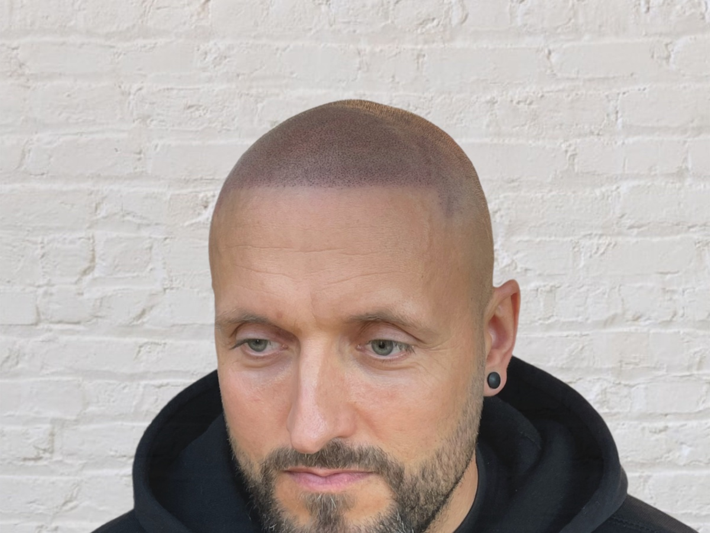

Scalp Micropigmentation — Hamburg
Geheimratsecken & lichtes Haar.
Geheimratsecken & lichtes Haar.
Optisch weg — ganz ohne OP.
Der Unterschied entscheidet sich am Übergang zwischen Pigmentierung und echtem Haar. Deshalb kommt die Behandlung hier nicht aus dem Tattoo-Studio, sondern von einem Barber mit dem geschulten Auge für weiche Fade-Übergänge. Zieh am Regler — und sieh selbst, worauf es ankommt.
Ehrlich · Unverbindlich · Ohne Verkaufsdruck

↔